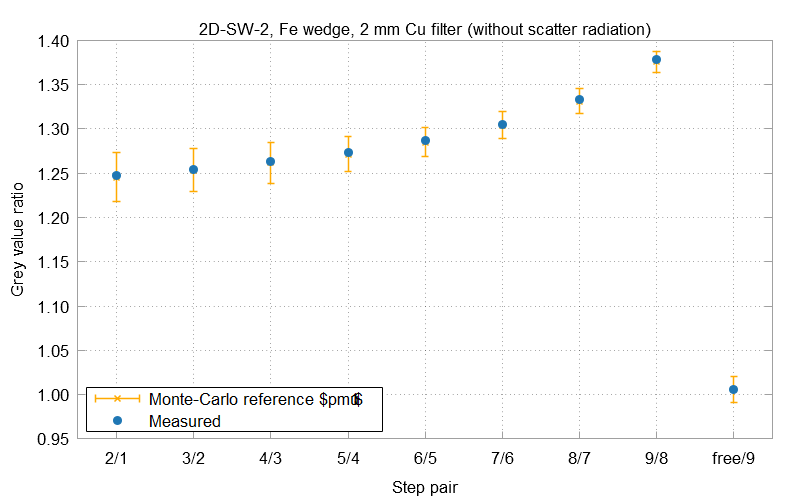

Module ctsimu.evaluation.test2D_SW_2
Test 2D-SW-2: Spectral filtering
In this test scenario, spectral filtering is tested. Two spherical wedges with 9 steps of different thicknesses are simulated: one made of aluminum, the other one made of iron. For both wedges, we define two scenarios each: one at an X-ray spectrum of 200 kV without any additional filters (apart from the tube window), the other one with an additional copper filter (2 mm) by which the spectrum shall be filtered. This will result in grey value ratios between the wedge steps which are characteristic to each scenario. Those ratios are compared to the ratios obtained from particle-transport Monte-Carlo simulations of the corresponding scenarios.
When running the test evaluation, please take care to use the correct keywords for each sub-test, as shown in the code example below. It is not necessary to run all tests at once, but possible.
from ctsimu.toolbox import Toolbox
Toolbox("2D-SW-2",
Al = "2D-SW-2_Al_200kV_noFilter_metadata.json",
AlCu = "2D-SW-2_Al_200kV_Filter2mmCu_metadata.json",
Fe = "2D-SW-2_Fe_200kV_noFilter_metadata.json",
FeCu = "2D-SW-2_Fe_200kV_Filter2mmCu_metadata.json"
)
The regions of interest (ROI) where the gray values are measured are the same as shown for scenario ctsimu.evaluation.test2D_SW_1. The errors of the gray value ratios between the steps of the wedges in the Monte-Carlo simulations are obtained by Gaussian error propagation in analogy to the procedure shown for 2D-SW-1.
The result files list the measured grey values and their corresponding ROIs, as well as the measured grey value ratios between subsequent steps. For the ratios, it also lists the Monte-Carlo reference values and their uncertainties. Just like for scenario 2D-SW-1, values are given for simulations considering only primary radiation (without scatter radiation), and simulations which consider both (labelled scatter in the result files). Plots such as the example shown below are produced for each sub-test.

The example evaluation result displays the gray value ratios between each pair of neighboring steps of the iron wedge. Small crosses represent the grey value ratios calculated from the Monte-Carlo simulations. Their error bars cover the ratio's uncertainty u in both directions. Solid circles without error bars show the measured ratios from the projections of the simulation software.
Expand source code
# -*- coding: UTF-8 -*-
"""# Test 2D-SW-2: Spectral filtering
.. include:: ./test2D_SW_2.md
"""
from ..test import *
from ..helpers import *
import pkgutil
import io
class Test2D_SW_2_results:
""" Results for one sub test of the filtering scenario. """
def __init__(self):
self.longName = ""
# Grey value means and ratios (per wedge step):
self.means = [] # Mean value for each step
self.ratios = None # Grey value ratios between the steps
# Grey values from Monte-Carlo simuation:
self.means_rosi_total = None # accounting for scatter radiation
self.means_rosi_primary = None # accounting only for primary radiation
self.means_mcray_total = None # accounting for scatter radiation
self.means_mcray_primary = None # accounting only for primary radiation
# Reference values for Monte-Carlo simulation (calculated in loadReference())
self.means_mc_total = None # accounting for scatter radiation
self.means_mc_primary = None # accounting only for primary radiation
self.error_mc_total_upper = None
self.error_mc_total_lower = None
self.error_mc_primary_upper = None
self.error_mc_primary_lower = None
# reference grey value ratios
self.ratios_mc_total = None
self.ratios_mc_primary = None
self.error_ratios_mc_total_upper = []
self.error_ratios_mc_total_lower = []
self.error_ratios_mc_primary_upper = []
self.error_ratios_mc_primary_lower = []
def loadReference(self, name):
dataText = pkgutil.get_data(__name__, "data/2D-SW-2_scenario{name}.txt".format(name=name)).decode()
dataIO = io.StringIO(dataText)
allData = numpy.loadtxt(dataIO, delimiter='\t') # ignore free beam
# --- total radiation
means_rosi_total = allData[:,1]
means_mcray_total = allData[:,4]
means_total = (means_rosi_total + means_mcray_total) * 0.5
delta_total = numpy.absolute(means_rosi_total - means_mcray_total)
stddev_rosi_total = allData[:,2]
stddev_mcray_total = allData[:,5]
#err_total = 0.5*(delta_total + numpy.sqrt(numpy.square(stddev_rosi_total) + numpy.square(stddev_mcray_total)))
err_total_rosi = numpy.fmax(stddev_rosi_total, stddev_mcray_total-delta_total) + 0.5*delta_total
err_total_mcray = numpy.fmax(stddev_mcray_total, stddev_rosi_total-delta_total) + 0.5*delta_total
err_total_upper = numpy.zeros_like(err_total_rosi)
err_total_lower = numpy.zeros_like(err_total_rosi)
for i in range(len(err_total_upper)):
if means_rosi_total[i] > means_total[i]: # ROSI is upper bound
err_total_upper[i] = err_total_rosi[i]
err_total_lower[i] = err_total_mcray[i]
else: # McRay is upper bound
err_total_upper[i] = err_total_mcray[i]
err_total_lower[i] = err_total_rosi[i]
# --- primary radiation
means_rosi_primary = allData[:,9]
means_mcray_primary = allData[:,12]
means_primary = (means_rosi_primary + means_mcray_primary) * 0.5
delta_primary = numpy.absolute(means_rosi_primary - means_mcray_primary)
stddev_rosi_primary = allData[:,10]
stddev_mcray_primary = allData[:,13]
#err_primary = 0.5*(delta_primary + numpy.sqrt(numpy.square(stddev_rosi_primary) + numpy.square(stddev_mcray_primary)))
err_primary_rosi = numpy.fmax(stddev_rosi_primary, stddev_mcray_primary-delta_primary) + 0.5*delta_primary
err_primary_mcray = numpy.fmax(stddev_mcray_primary, stddev_rosi_primary-delta_primary) + 0.5*delta_primary
err_primary_upper = numpy.zeros_like(err_primary_rosi)
err_primary_lower = numpy.zeros_like(err_primary_rosi)
for i in range(len(err_primary_upper)):
if means_rosi_primary[i] > means_primary[i]: # ROSI is upper bound
err_primary_upper[i] = err_primary_rosi[i]
err_primary_lower[i] = err_primary_mcray[i]
else: # McRay is upper bound
err_primary_upper[i] = err_primary_mcray[i]
err_primary_lower[i] = err_primary_rosi[i]
self.means_rosi_total = means_rosi_total
self.means_rosi_primary = means_rosi_primary
self.means_mcray_total = means_mcray_total
self.means_mcray_primary = means_mcray_primary
self.means_mc_total = means_total
self.means_mc_primary = means_primary
self.error_mc_total_upper = err_total_upper
self.error_mc_total_lower = err_total_lower
self.error_mc_primary_upper = err_primary_upper
self.error_mc_primary_lower = err_primary_lower
dataIO.close()
self.ratios_mc_total = ratios(self.means_mc_total)
self.ratios_mc_primary = ratios(self.means_mc_primary)
# calculate maximum uncertainties of MC ratios:
for v in range(1, len(self.ratios_mc_primary)+1):
c, uncertainty_total_upper = divide_and_error(
muA = self.means_mc_total[v-1],
muB = self.means_mc_total[v],
errA = self.error_mc_total_upper[v],
errB = self.error_mc_total_upper[v-1]
)
c, uncertainty_primary_upper = divide_and_error(
muA = self.means_mc_primary[v-1],
muB = self.means_mc_primary[v],
errA = self.error_mc_primary_upper[v],
errB = self.error_mc_primary_upper[v-1]
)
c, uncertainty_total_lower = divide_and_error(
muA = self.means_mc_total[v-1],
muB = self.means_mc_total[v],
errA = self.error_mc_total_lower[v],
errB = self.error_mc_total_lower[v-1]
)
c, uncertainty_primary_lower = divide_and_error(
muA = self.means_mc_primary[v-1],
muB = self.means_mc_primary[v],
errA = self.error_mc_primary_lower[v],
errB = self.error_mc_primary_lower[v-1]
)
self.error_ratios_mc_total_upper.append(uncertainty_total_upper)
self.error_ratios_mc_primary_upper.append(uncertainty_primary_upper)
self.error_ratios_mc_total_lower.append(uncertainty_total_lower)
self.error_ratios_mc_primary_lower.append(uncertainty_primary_lower)
class Test2D_SW_2(generalTest):
""" CTSimU test 2D-SW-1: detector models / scintillators.
CTSimU test 2D-SW-2: spectral filtering. """
def __init__(self, resultFileDirectory=".", name=None, rawOutput=False):
generalTest.__init__(
self,
testName="2D-SW-2",
name=name,
resultFileDirectory=resultFileDirectory,
rawOutput=rawOutput)
self.results = []
self.shrink = 35
self.leftOffset = 510 - self.shrink
self.nPixels = 20 + 2*self.shrink
# Absolute step definitions. Will be shrunk to accept tolerance border,
# but these absolute definitions are needed for grey value rescaling and clipping.
self.steps = [
ImageROI(self.leftOffset, 819, self.leftOffset+self.nPixels, 910),
ImageROI(self.leftOffset, 728, self.leftOffset+self.nPixels, 819),
ImageROI(self.leftOffset, 637, self.leftOffset+self.nPixels, 728),
ImageROI(self.leftOffset, 546, self.leftOffset+self.nPixels, 637),
ImageROI(self.leftOffset, 455, self.leftOffset+self.nPixels, 546),
ImageROI(self.leftOffset, 364, self.leftOffset+self.nPixels, 455),
ImageROI(self.leftOffset, 273, self.leftOffset+self.nPixels, 364),
ImageROI(self.leftOffset, 182, self.leftOffset+self.nPixels, 273),
ImageROI(self.leftOffset, 91, self.leftOffset+self.nPixels, 182),
ImageROI(self.leftOffset, 0, self.leftOffset+self.nPixels, 91) # free beam
]
def prepare(self):
""" Preparations before the test will be run with the images from the pipeline. """
self.prepared = True
def prepareRun(self, i):
if i < len(self.subtests):
results = Test2D_SW_2_results()
if self.subtests[i] == "Al":
results.loadReference("01_Al_noFilter_200kV-poly_Ideal")
results.longName = "Al wedge, no filter"
elif self.subtests[i] == "AlCu":
results.loadReference("02_Al_CuFilter_200kV-poly_Ideal")
results.longName = "Al wedge, 2 mm Cu filter"
elif self.subtests[i] == "Fe":
results.loadReference("03_Fe_noFilter_200kV-poly_Ideal")
results.longName = "Fe wedge, no filter"
elif self.subtests[i] == "FeCu":
results.loadReference("04_Fe_CuFilter_200kV-poly_Ideal")
results.longName = "Fe wedge, 2 mm Cu filter"
else:
raise Exception("{key} is not a valid subtest identifier for test scenario {test}".format(key=self.subtests[i], test=self.testName))
self.name = self.testName
self.results.append(results)
else:
if len(self.subtests) == 0:
raise Exception("Please provide keywords that identify which metadata file belongs to which subtest. Test {testname} accepts the following keywords: 'Al', 'AlCu', 'Fe' and 'FeCu'.".format(testname=self.testName))
else:
raise Exception("Number of provided image metadata files exceeds number of test runs ({expected}).".format(expected=len(self.subtests)))
def run(self, image):
self.prepare()
self.prepareRun(self.currentRun)
i = self.currentRun
subtestName = self.subtests[i]
# Grey value summary
statsText = "# Evaluation of Test {name}, {subname}:\n".format(name=self.name, subname=subtestName)
statsText += "# {longDesc}\n".format(longDesc=self.results[i].longName)
statsText += "# \n"
statsText += "# ROI mean grey value per step\n"
statsText += "# step\tx0\ty0\tx1\ty1\twidth [px]\theight [px]\tarea [px]\tmean [GV]\n"
step = 0
for roi in self.steps:
step += 1
smallerROI = copy.deepcopy(roi)
smallerROI.grow(-self.shrink)
stats = image.stats(smallerROI)
statsText += "{}\t{}\t{}\t{}\t{}\t{}\t{}\t{}\t{:.3f}\n".format(step, smallerROI.x0, smallerROI.y0, smallerROI.x1, smallerROI.y1, stats["width"], stats["height"], stats["area"], stats["mean"])
self.results[i].means.append(stats["mean"])
self.results[i].ratios = ratios(self.results[i].means)
statsFileName = "{dir}/{name}_{subname}_grey_values.txt".format(dir=self.resultFileDirectory, name=self.name, subname=subtestName)
with open(statsFileName, 'w') as statsFile:
statsFile.write(statsText)
statsFile.close()
# Ratio summary
ratioText = "# Evaluation of Test {name}, {subname}:\n".format(name=self.name, subname=subtestName)
ratioText += "# {longDesc}\n".format(longDesc=self.results[i].longName)
ratioText += "# \n"
ratioText += "# Grey value ratios\n"
ratioText += "# step A\tstep B\tratio (A/B)\treference ratio (primary)\terror_lower (ref. primary)\terror_upper (ref. primary)\trel. deviation (primary)\treference ratio (total)\terror_lower (ref. total)\terror_upper (ref. total)\trel. deviation (total)\n"
for r in range(len(self.results[i].ratios)):
ratioText += "{A}\t{B}\t{ratio:.5f}\t{refPrimary:.5f}\t{errorPrimaryLower:.5f}\t{errorPrimaryUpper:.5f}\t{devFacPrimary:.5f}\t{reftotal:.5f}\t{errorTotalLower:.5f}\t{errorTotalUpper:.5f}\t{devFacTotal:.5f}\n".format(
A = (r+2),
B = (r+1),
ratio = self.results[i].ratios[r],
refPrimary = self.results[i].ratios_mc_primary[r],
errorPrimaryLower = self.results[i].error_ratios_mc_primary_lower[r],
errorPrimaryUpper = self.results[i].error_ratios_mc_primary_upper[r],
devFacPrimary = (self.results[i].ratios[r] / self.results[i].ratios_mc_primary[r] - 1),
reftotal = self.results[i].ratios_mc_total[r],
errorTotalLower = self.results[i].error_ratios_mc_total_lower[r],
errorTotalUpper = self.results[i].error_ratios_mc_total_upper[r],
devFacTotal = (self.results[i].ratios[r] / self.results[i].ratios_mc_total[r] - 1)
)
ratioFileName = "{dir}/{name}_{subname}_ratios.txt".format(dir=self.resultFileDirectory, name=self.name, subname=subtestName)
with open(ratioFileName, 'w') as ratiosFile:
ratiosFile.write(ratioText)
ratiosFile.close()
self.plotResults()
self.currentRun += 1
return image
def followUp(self):
pass
def plotResults(self):
i = self.currentRun
subtestName = self.subtests[i]
xValues = numpy.linspace(0, len(self.results[i].ratios)-1, len(self.results[i].ratios), endpoint=True)
xLabels = ("2 by 1", "3 by 2", "4 by 3", "5 by 4", "6 by 5", "7 by 6", "8 by 7", "9 by 8", "10 by 9")
try:
import matplotlib
import matplotlib.pyplot
from matplotlib.ticker import (MultipleLocator, FormatStrFormatter, AutoMinorLocator)
matplotlib.use("agg")
for mode in ("primary", "total"):
fig, ax = matplotlib.pyplot.subplots(nrows=1, ncols=1, figsize=(8, 5))
# Grey Value Profile:
if mode == "primary":
modeDescription = "primary radiation"
ax.errorbar(xValues, self.results[i].ratios_mc_primary, xerr=None, yerr=[self.results[i].error_ratios_mc_primary_lower, self.results[i].error_ratios_mc_primary_upper], linewidth=0, elinewidth=2.0, ecolor='#fe6100')
ax.plot(xValues, self.results[i].ratios_mc_primary, '_', markersize=11.0, label="Monte-Carlo reference", color='#fe6100')
else:
modeDescription = "total radiation (scatter+primary)"
ax.errorbar(xValues, self.results[i].ratios_mc_total, xerr=None, yerr=[self.results[i].error_ratios_mc_total_lower, self.results[i].error_ratios_mc_total_upper], linewidth=0, elinewidth=2.0, ecolor='#fe6100')
ax.plot(xValues, self.results[i].ratios_mc_total, '_', markersize=11.0, label="Monte-Carlo reference", color='#fe6100')
ax.plot(xValues, self.results[i].ratios, 'o', markersize=5.0, label="measured", color='#1f77b4')
ax.set_xlabel("step pair division")
ax.set_ylabel("grey value ratio")
ax.set_title("2D-SW-2, {sub}, {details}".format(sub=self.results[i].longName, details=modeDescription), loc="left", fontsize=10)
ax.set_xticks(xValues)
ax.xaxis.set_ticklabels(xLabels)
ax.grid(visible=True, which='major', axis='both', color='#d9d9d9', linestyle='dashed')
ax.grid(visible=True, which='minor', axis='both', color='#e7e7e7', linestyle='dotted')
ax.legend(loc='lower left')
fig.tight_layout(pad=2.5)
plotFilename = "{dir}/{name}_{subname}_ratios_{mode}.png".format(dir=self.resultFileDirectory, name=self.name, subname=subtestName, mode=mode)
matplotlib.pyplot.savefig(plotFilename)
fig.clf()
matplotlib.pyplot.close('all')
except Exception as e:
log(f"Warning: Error plotting results for test {self.name}, {subtestName} using matplotlib: {e}")Classes
class Test2D_SW_2 (resultFileDirectory='.', name=None, rawOutput=False)-
CTSimU test 2D-SW-1: detector models / scintillators. CTSimU test 2D-SW-2: spectral filtering.
Expand source code
class Test2D_SW_2(generalTest): """ CTSimU test 2D-SW-1: detector models / scintillators. CTSimU test 2D-SW-2: spectral filtering. """ def __init__(self, resultFileDirectory=".", name=None, rawOutput=False): generalTest.__init__( self, testName="2D-SW-2", name=name, resultFileDirectory=resultFileDirectory, rawOutput=rawOutput) self.results = [] self.shrink = 35 self.leftOffset = 510 - self.shrink self.nPixels = 20 + 2*self.shrink # Absolute step definitions. Will be shrunk to accept tolerance border, # but these absolute definitions are needed for grey value rescaling and clipping. self.steps = [ ImageROI(self.leftOffset, 819, self.leftOffset+self.nPixels, 910), ImageROI(self.leftOffset, 728, self.leftOffset+self.nPixels, 819), ImageROI(self.leftOffset, 637, self.leftOffset+self.nPixels, 728), ImageROI(self.leftOffset, 546, self.leftOffset+self.nPixels, 637), ImageROI(self.leftOffset, 455, self.leftOffset+self.nPixels, 546), ImageROI(self.leftOffset, 364, self.leftOffset+self.nPixels, 455), ImageROI(self.leftOffset, 273, self.leftOffset+self.nPixels, 364), ImageROI(self.leftOffset, 182, self.leftOffset+self.nPixels, 273), ImageROI(self.leftOffset, 91, self.leftOffset+self.nPixels, 182), ImageROI(self.leftOffset, 0, self.leftOffset+self.nPixels, 91) # free beam ] def prepare(self): """ Preparations before the test will be run with the images from the pipeline. """ self.prepared = True def prepareRun(self, i): if i < len(self.subtests): results = Test2D_SW_2_results() if self.subtests[i] == "Al": results.loadReference("01_Al_noFilter_200kV-poly_Ideal") results.longName = "Al wedge, no filter" elif self.subtests[i] == "AlCu": results.loadReference("02_Al_CuFilter_200kV-poly_Ideal") results.longName = "Al wedge, 2 mm Cu filter" elif self.subtests[i] == "Fe": results.loadReference("03_Fe_noFilter_200kV-poly_Ideal") results.longName = "Fe wedge, no filter" elif self.subtests[i] == "FeCu": results.loadReference("04_Fe_CuFilter_200kV-poly_Ideal") results.longName = "Fe wedge, 2 mm Cu filter" else: raise Exception("{key} is not a valid subtest identifier for test scenario {test}".format(key=self.subtests[i], test=self.testName)) self.name = self.testName self.results.append(results) else: if len(self.subtests) == 0: raise Exception("Please provide keywords that identify which metadata file belongs to which subtest. Test {testname} accepts the following keywords: 'Al', 'AlCu', 'Fe' and 'FeCu'.".format(testname=self.testName)) else: raise Exception("Number of provided image metadata files exceeds number of test runs ({expected}).".format(expected=len(self.subtests))) def run(self, image): self.prepare() self.prepareRun(self.currentRun) i = self.currentRun subtestName = self.subtests[i] # Grey value summary statsText = "# Evaluation of Test {name}, {subname}:\n".format(name=self.name, subname=subtestName) statsText += "# {longDesc}\n".format(longDesc=self.results[i].longName) statsText += "# \n" statsText += "# ROI mean grey value per step\n" statsText += "# step\tx0\ty0\tx1\ty1\twidth [px]\theight [px]\tarea [px]\tmean [GV]\n" step = 0 for roi in self.steps: step += 1 smallerROI = copy.deepcopy(roi) smallerROI.grow(-self.shrink) stats = image.stats(smallerROI) statsText += "{}\t{}\t{}\t{}\t{}\t{}\t{}\t{}\t{:.3f}\n".format(step, smallerROI.x0, smallerROI.y0, smallerROI.x1, smallerROI.y1, stats["width"], stats["height"], stats["area"], stats["mean"]) self.results[i].means.append(stats["mean"]) self.results[i].ratios = ratios(self.results[i].means) statsFileName = "{dir}/{name}_{subname}_grey_values.txt".format(dir=self.resultFileDirectory, name=self.name, subname=subtestName) with open(statsFileName, 'w') as statsFile: statsFile.write(statsText) statsFile.close() # Ratio summary ratioText = "# Evaluation of Test {name}, {subname}:\n".format(name=self.name, subname=subtestName) ratioText += "# {longDesc}\n".format(longDesc=self.results[i].longName) ratioText += "# \n" ratioText += "# Grey value ratios\n" ratioText += "# step A\tstep B\tratio (A/B)\treference ratio (primary)\terror_lower (ref. primary)\terror_upper (ref. primary)\trel. deviation (primary)\treference ratio (total)\terror_lower (ref. total)\terror_upper (ref. total)\trel. deviation (total)\n" for r in range(len(self.results[i].ratios)): ratioText += "{A}\t{B}\t{ratio:.5f}\t{refPrimary:.5f}\t{errorPrimaryLower:.5f}\t{errorPrimaryUpper:.5f}\t{devFacPrimary:.5f}\t{reftotal:.5f}\t{errorTotalLower:.5f}\t{errorTotalUpper:.5f}\t{devFacTotal:.5f}\n".format( A = (r+2), B = (r+1), ratio = self.results[i].ratios[r], refPrimary = self.results[i].ratios_mc_primary[r], errorPrimaryLower = self.results[i].error_ratios_mc_primary_lower[r], errorPrimaryUpper = self.results[i].error_ratios_mc_primary_upper[r], devFacPrimary = (self.results[i].ratios[r] / self.results[i].ratios_mc_primary[r] - 1), reftotal = self.results[i].ratios_mc_total[r], errorTotalLower = self.results[i].error_ratios_mc_total_lower[r], errorTotalUpper = self.results[i].error_ratios_mc_total_upper[r], devFacTotal = (self.results[i].ratios[r] / self.results[i].ratios_mc_total[r] - 1) ) ratioFileName = "{dir}/{name}_{subname}_ratios.txt".format(dir=self.resultFileDirectory, name=self.name, subname=subtestName) with open(ratioFileName, 'w') as ratiosFile: ratiosFile.write(ratioText) ratiosFile.close() self.plotResults() self.currentRun += 1 return image def followUp(self): pass def plotResults(self): i = self.currentRun subtestName = self.subtests[i] xValues = numpy.linspace(0, len(self.results[i].ratios)-1, len(self.results[i].ratios), endpoint=True) xLabels = ("2 by 1", "3 by 2", "4 by 3", "5 by 4", "6 by 5", "7 by 6", "8 by 7", "9 by 8", "10 by 9") try: import matplotlib import matplotlib.pyplot from matplotlib.ticker import (MultipleLocator, FormatStrFormatter, AutoMinorLocator) matplotlib.use("agg") for mode in ("primary", "total"): fig, ax = matplotlib.pyplot.subplots(nrows=1, ncols=1, figsize=(8, 5)) # Grey Value Profile: if mode == "primary": modeDescription = "primary radiation" ax.errorbar(xValues, self.results[i].ratios_mc_primary, xerr=None, yerr=[self.results[i].error_ratios_mc_primary_lower, self.results[i].error_ratios_mc_primary_upper], linewidth=0, elinewidth=2.0, ecolor='#fe6100') ax.plot(xValues, self.results[i].ratios_mc_primary, '_', markersize=11.0, label="Monte-Carlo reference", color='#fe6100') else: modeDescription = "total radiation (scatter+primary)" ax.errorbar(xValues, self.results[i].ratios_mc_total, xerr=None, yerr=[self.results[i].error_ratios_mc_total_lower, self.results[i].error_ratios_mc_total_upper], linewidth=0, elinewidth=2.0, ecolor='#fe6100') ax.plot(xValues, self.results[i].ratios_mc_total, '_', markersize=11.0, label="Monte-Carlo reference", color='#fe6100') ax.plot(xValues, self.results[i].ratios, 'o', markersize=5.0, label="measured", color='#1f77b4') ax.set_xlabel("step pair division") ax.set_ylabel("grey value ratio") ax.set_title("2D-SW-2, {sub}, {details}".format(sub=self.results[i].longName, details=modeDescription), loc="left", fontsize=10) ax.set_xticks(xValues) ax.xaxis.set_ticklabels(xLabels) ax.grid(visible=True, which='major', axis='both', color='#d9d9d9', linestyle='dashed') ax.grid(visible=True, which='minor', axis='both', color='#e7e7e7', linestyle='dotted') ax.legend(loc='lower left') fig.tight_layout(pad=2.5) plotFilename = "{dir}/{name}_{subname}_ratios_{mode}.png".format(dir=self.resultFileDirectory, name=self.name, subname=subtestName, mode=mode) matplotlib.pyplot.savefig(plotFilename) fig.clf() matplotlib.pyplot.close('all') except Exception as e: log(f"Warning: Error plotting results for test {self.name}, {subtestName} using matplotlib: {e}")Ancestors
Methods
def prepare(self)-
Preparations before the test will be run with the images from the pipeline.
Expand source code
def prepare(self): """ Preparations before the test will be run with the images from the pipeline. """ self.prepared = True def prepareRun(self, i)-
Expand source code
def prepareRun(self, i): if i < len(self.subtests): results = Test2D_SW_2_results() if self.subtests[i] == "Al": results.loadReference("01_Al_noFilter_200kV-poly_Ideal") results.longName = "Al wedge, no filter" elif self.subtests[i] == "AlCu": results.loadReference("02_Al_CuFilter_200kV-poly_Ideal") results.longName = "Al wedge, 2 mm Cu filter" elif self.subtests[i] == "Fe": results.loadReference("03_Fe_noFilter_200kV-poly_Ideal") results.longName = "Fe wedge, no filter" elif self.subtests[i] == "FeCu": results.loadReference("04_Fe_CuFilter_200kV-poly_Ideal") results.longName = "Fe wedge, 2 mm Cu filter" else: raise Exception("{key} is not a valid subtest identifier for test scenario {test}".format(key=self.subtests[i], test=self.testName)) self.name = self.testName self.results.append(results) else: if len(self.subtests) == 0: raise Exception("Please provide keywords that identify which metadata file belongs to which subtest. Test {testname} accepts the following keywords: 'Al', 'AlCu', 'Fe' and 'FeCu'.".format(testname=self.testName)) else: raise Exception("Number of provided image metadata files exceeds number of test runs ({expected}).".format(expected=len(self.subtests)))
Inherited members
class Test2D_SW_2_results-
Results for one sub test of the filtering scenario.
Expand source code
class Test2D_SW_2_results: """ Results for one sub test of the filtering scenario. """ def __init__(self): self.longName = "" # Grey value means and ratios (per wedge step): self.means = [] # Mean value for each step self.ratios = None # Grey value ratios between the steps # Grey values from Monte-Carlo simuation: self.means_rosi_total = None # accounting for scatter radiation self.means_rosi_primary = None # accounting only for primary radiation self.means_mcray_total = None # accounting for scatter radiation self.means_mcray_primary = None # accounting only for primary radiation # Reference values for Monte-Carlo simulation (calculated in loadReference()) self.means_mc_total = None # accounting for scatter radiation self.means_mc_primary = None # accounting only for primary radiation self.error_mc_total_upper = None self.error_mc_total_lower = None self.error_mc_primary_upper = None self.error_mc_primary_lower = None # reference grey value ratios self.ratios_mc_total = None self.ratios_mc_primary = None self.error_ratios_mc_total_upper = [] self.error_ratios_mc_total_lower = [] self.error_ratios_mc_primary_upper = [] self.error_ratios_mc_primary_lower = [] def loadReference(self, name): dataText = pkgutil.get_data(__name__, "data/2D-SW-2_scenario{name}.txt".format(name=name)).decode() dataIO = io.StringIO(dataText) allData = numpy.loadtxt(dataIO, delimiter='\t') # ignore free beam # --- total radiation means_rosi_total = allData[:,1] means_mcray_total = allData[:,4] means_total = (means_rosi_total + means_mcray_total) * 0.5 delta_total = numpy.absolute(means_rosi_total - means_mcray_total) stddev_rosi_total = allData[:,2] stddev_mcray_total = allData[:,5] #err_total = 0.5*(delta_total + numpy.sqrt(numpy.square(stddev_rosi_total) + numpy.square(stddev_mcray_total))) err_total_rosi = numpy.fmax(stddev_rosi_total, stddev_mcray_total-delta_total) + 0.5*delta_total err_total_mcray = numpy.fmax(stddev_mcray_total, stddev_rosi_total-delta_total) + 0.5*delta_total err_total_upper = numpy.zeros_like(err_total_rosi) err_total_lower = numpy.zeros_like(err_total_rosi) for i in range(len(err_total_upper)): if means_rosi_total[i] > means_total[i]: # ROSI is upper bound err_total_upper[i] = err_total_rosi[i] err_total_lower[i] = err_total_mcray[i] else: # McRay is upper bound err_total_upper[i] = err_total_mcray[i] err_total_lower[i] = err_total_rosi[i] # --- primary radiation means_rosi_primary = allData[:,9] means_mcray_primary = allData[:,12] means_primary = (means_rosi_primary + means_mcray_primary) * 0.5 delta_primary = numpy.absolute(means_rosi_primary - means_mcray_primary) stddev_rosi_primary = allData[:,10] stddev_mcray_primary = allData[:,13] #err_primary = 0.5*(delta_primary + numpy.sqrt(numpy.square(stddev_rosi_primary) + numpy.square(stddev_mcray_primary))) err_primary_rosi = numpy.fmax(stddev_rosi_primary, stddev_mcray_primary-delta_primary) + 0.5*delta_primary err_primary_mcray = numpy.fmax(stddev_mcray_primary, stddev_rosi_primary-delta_primary) + 0.5*delta_primary err_primary_upper = numpy.zeros_like(err_primary_rosi) err_primary_lower = numpy.zeros_like(err_primary_rosi) for i in range(len(err_primary_upper)): if means_rosi_primary[i] > means_primary[i]: # ROSI is upper bound err_primary_upper[i] = err_primary_rosi[i] err_primary_lower[i] = err_primary_mcray[i] else: # McRay is upper bound err_primary_upper[i] = err_primary_mcray[i] err_primary_lower[i] = err_primary_rosi[i] self.means_rosi_total = means_rosi_total self.means_rosi_primary = means_rosi_primary self.means_mcray_total = means_mcray_total self.means_mcray_primary = means_mcray_primary self.means_mc_total = means_total self.means_mc_primary = means_primary self.error_mc_total_upper = err_total_upper self.error_mc_total_lower = err_total_lower self.error_mc_primary_upper = err_primary_upper self.error_mc_primary_lower = err_primary_lower dataIO.close() self.ratios_mc_total = ratios(self.means_mc_total) self.ratios_mc_primary = ratios(self.means_mc_primary) # calculate maximum uncertainties of MC ratios: for v in range(1, len(self.ratios_mc_primary)+1): c, uncertainty_total_upper = divide_and_error( muA = self.means_mc_total[v-1], muB = self.means_mc_total[v], errA = self.error_mc_total_upper[v], errB = self.error_mc_total_upper[v-1] ) c, uncertainty_primary_upper = divide_and_error( muA = self.means_mc_primary[v-1], muB = self.means_mc_primary[v], errA = self.error_mc_primary_upper[v], errB = self.error_mc_primary_upper[v-1] ) c, uncertainty_total_lower = divide_and_error( muA = self.means_mc_total[v-1], muB = self.means_mc_total[v], errA = self.error_mc_total_lower[v], errB = self.error_mc_total_lower[v-1] ) c, uncertainty_primary_lower = divide_and_error( muA = self.means_mc_primary[v-1], muB = self.means_mc_primary[v], errA = self.error_mc_primary_lower[v], errB = self.error_mc_primary_lower[v-1] ) self.error_ratios_mc_total_upper.append(uncertainty_total_upper) self.error_ratios_mc_primary_upper.append(uncertainty_primary_upper) self.error_ratios_mc_total_lower.append(uncertainty_total_lower) self.error_ratios_mc_primary_lower.append(uncertainty_primary_lower)Methods
def loadReference(self, name)-
Expand source code
def loadReference(self, name): dataText = pkgutil.get_data(__name__, "data/2D-SW-2_scenario{name}.txt".format(name=name)).decode() dataIO = io.StringIO(dataText) allData = numpy.loadtxt(dataIO, delimiter='\t') # ignore free beam # --- total radiation means_rosi_total = allData[:,1] means_mcray_total = allData[:,4] means_total = (means_rosi_total + means_mcray_total) * 0.5 delta_total = numpy.absolute(means_rosi_total - means_mcray_total) stddev_rosi_total = allData[:,2] stddev_mcray_total = allData[:,5] #err_total = 0.5*(delta_total + numpy.sqrt(numpy.square(stddev_rosi_total) + numpy.square(stddev_mcray_total))) err_total_rosi = numpy.fmax(stddev_rosi_total, stddev_mcray_total-delta_total) + 0.5*delta_total err_total_mcray = numpy.fmax(stddev_mcray_total, stddev_rosi_total-delta_total) + 0.5*delta_total err_total_upper = numpy.zeros_like(err_total_rosi) err_total_lower = numpy.zeros_like(err_total_rosi) for i in range(len(err_total_upper)): if means_rosi_total[i] > means_total[i]: # ROSI is upper bound err_total_upper[i] = err_total_rosi[i] err_total_lower[i] = err_total_mcray[i] else: # McRay is upper bound err_total_upper[i] = err_total_mcray[i] err_total_lower[i] = err_total_rosi[i] # --- primary radiation means_rosi_primary = allData[:,9] means_mcray_primary = allData[:,12] means_primary = (means_rosi_primary + means_mcray_primary) * 0.5 delta_primary = numpy.absolute(means_rosi_primary - means_mcray_primary) stddev_rosi_primary = allData[:,10] stddev_mcray_primary = allData[:,13] #err_primary = 0.5*(delta_primary + numpy.sqrt(numpy.square(stddev_rosi_primary) + numpy.square(stddev_mcray_primary))) err_primary_rosi = numpy.fmax(stddev_rosi_primary, stddev_mcray_primary-delta_primary) + 0.5*delta_primary err_primary_mcray = numpy.fmax(stddev_mcray_primary, stddev_rosi_primary-delta_primary) + 0.5*delta_primary err_primary_upper = numpy.zeros_like(err_primary_rosi) err_primary_lower = numpy.zeros_like(err_primary_rosi) for i in range(len(err_primary_upper)): if means_rosi_primary[i] > means_primary[i]: # ROSI is upper bound err_primary_upper[i] = err_primary_rosi[i] err_primary_lower[i] = err_primary_mcray[i] else: # McRay is upper bound err_primary_upper[i] = err_primary_mcray[i] err_primary_lower[i] = err_primary_rosi[i] self.means_rosi_total = means_rosi_total self.means_rosi_primary = means_rosi_primary self.means_mcray_total = means_mcray_total self.means_mcray_primary = means_mcray_primary self.means_mc_total = means_total self.means_mc_primary = means_primary self.error_mc_total_upper = err_total_upper self.error_mc_total_lower = err_total_lower self.error_mc_primary_upper = err_primary_upper self.error_mc_primary_lower = err_primary_lower dataIO.close() self.ratios_mc_total = ratios(self.means_mc_total) self.ratios_mc_primary = ratios(self.means_mc_primary) # calculate maximum uncertainties of MC ratios: for v in range(1, len(self.ratios_mc_primary)+1): c, uncertainty_total_upper = divide_and_error( muA = self.means_mc_total[v-1], muB = self.means_mc_total[v], errA = self.error_mc_total_upper[v], errB = self.error_mc_total_upper[v-1] ) c, uncertainty_primary_upper = divide_and_error( muA = self.means_mc_primary[v-1], muB = self.means_mc_primary[v], errA = self.error_mc_primary_upper[v], errB = self.error_mc_primary_upper[v-1] ) c, uncertainty_total_lower = divide_and_error( muA = self.means_mc_total[v-1], muB = self.means_mc_total[v], errA = self.error_mc_total_lower[v], errB = self.error_mc_total_lower[v-1] ) c, uncertainty_primary_lower = divide_and_error( muA = self.means_mc_primary[v-1], muB = self.means_mc_primary[v], errA = self.error_mc_primary_lower[v], errB = self.error_mc_primary_lower[v-1] ) self.error_ratios_mc_total_upper.append(uncertainty_total_upper) self.error_ratios_mc_primary_upper.append(uncertainty_primary_upper) self.error_ratios_mc_total_lower.append(uncertainty_total_lower) self.error_ratios_mc_primary_lower.append(uncertainty_primary_lower)